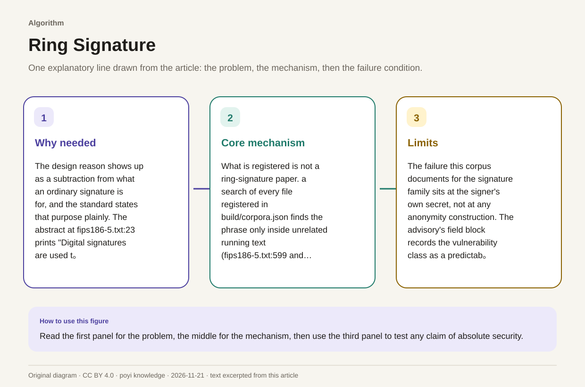
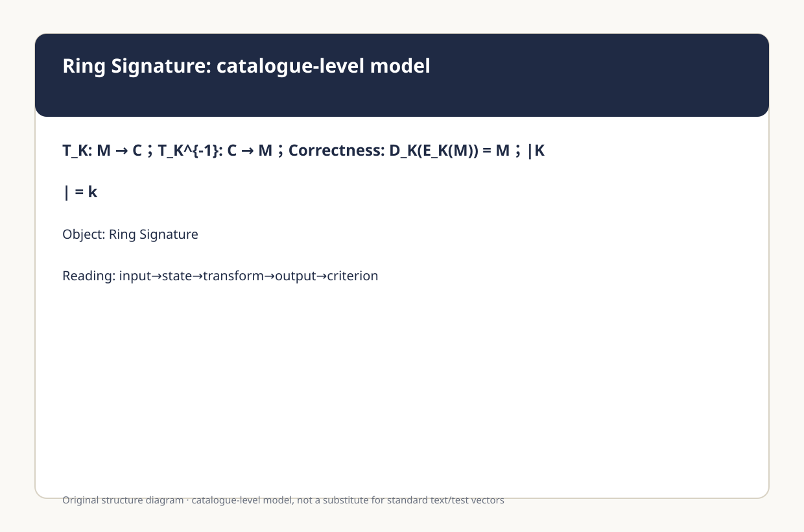

Principles
Algorithm: Ring Signature (环签名). What is registered is not a ring-signature paper. a search of every file registered in build/corpora.json finds the phrase only inside unrelated running text (fips186-5.txt:599 and debian-dsa1571.html:94 both print it as part of a longer clause about signature generation), so this entry states the mechanism against the signature model the retained sources do print, marks nothing they do not print, and gives no scheme-specific security statement. A ring signature is an ordinary public-key signature computed with one member's private key together with a set of public keys - the ring - of which that key is one; verification is performed against the whole set, and what a verifier learns is that some member of the set signed. The model being inherited is FIPS 186-5's, printed at fips186-5.txt:36 as "Signature generation uses a private key to generate a digital signature; signature verification uses a public key that corresponds to but is not the same as the private key." and closed in the same paragraph by "Only the user that possesses the private key can perform signature generation." The same line also fixes the keying premise a ring is built out of, "Each signatory possesses a private and public key pair." The construction changes the object of verification, from one key to a set of keys; it does not change the secrecy of any private key, and the requirement at fips186-5.txt:35 that the rules "allow the identity of the signatory and the integrity of the data to be verified" is precisely the half that a ring signature declines to satisfy.

Why it matters
The design reason shows up as a subtraction from what an ordinary signature is for, and the standard states that purpose plainly. The abstract at fips186-5.txt:23 prints "Digital signatures are used to detect unauthorized modifications to data and to authenticate the identity of the signatory." and then the evidentiary property, "This is known as non-repudiation since the signatory cannot easily repudiate the signature at a later time." The keying premise is stated as a binding to a person: the definition of private key at fips186-5.txt:224 reads "The private key is uniquely associated with the owner and is not made public." Verification, meanwhile, is a public operation on a public object - fips186-5.txt:36 says "Anyone can verify the signature by employing the signatory's public key." Nothing in that last sentence is logically bound to one key: what the mechanics need is the key, and what the identity conclusion needs is the binding that fips186-5.txt:224 asserts. A ring signature moves exactly that boundary. It keeps integrity and it keeps the assertion that one of these private keys signed this; it gives up naming the owner, and with it the repudiation-resistant evidence value, since a signature that does not identify a signer cannot bind one. Where a caller's real requirement is proof that some member of a defined set acted, naming the member is disclosure rather than assurance, and that is the design. This is an inference drawn about a construction the retained files do not describe; the quoted runs are only the properties those files do state.
Applications
The registered sources give an extension point, not a deployment history. RFC 4252's public key method is the identity-bound check a ring signature does not offer, and it is printed as a requirement: "With this method, the possession of a private key serves as authentication. This method works by sending a signature created with a private key of the user. The server MUST check that the key is a valid authenticator for the user, and MUST check that the signature is valid." (rfc4252.txt:439-443 - the four-space gaps are this file's continuation indent, kept as printed). The signature covers session-bound material, so it cannot be lifted from one session to another (rfc4252.txt:511-514). What makes this relevant to a non-standard scheme is the next permission: "Any public key algorithm may be offered for use in authentication. In particular, the list is not constrained by what was negotiated during key exchange." (rfc4252.txt:474-476), and the server's recourse on the same lines is simply to reject what it does not support. That is the whole of what these files support: a signature scheme outside the approved set can be offered wherever a verifier is free to accept or refuse an algorithm name, and it must be refused or accepted by that verifier's own policy. Nothing in the four registered files names a ring-signature scheme in use; FIPS 186-5 reserves the approval of further schemes to its own publications and to NIST Special Publications (fips186-5.txt:39), which is why no approved-for-use claim is made here either.

Limits & attacks
The failure this corpus documents for the signature family sits at the signer's own secret, not at any anonymity construction. The advisory's field block records the vulnerability class as a predictable random number generator (debian-dsa1571.html:75) - and the cause in one paragraph: "Luciano Bello discovered that the random number generator in Debian's openssl package is predictable. This is caused by an incorrect Debian-specific change to the openssl package (CVE-2008-0166). As a result, cryptographic key material may be guessable." (debian-dsa1571.html:80-83). Its algorithm-level reason is a sentence about the standard, not about a ring: "the Digital Signature Algorithm relies on a secret random value used during signature generation." (debian-dsa1571.html:93-94), from which the consequence for signing keys follows, "all DSA keys ever used on affected Debian systems for signing or authentication purposes should be considered compromised" (debian-dsa1571.html:91-94). The reach is listed broadly - "Affected keys include SSH keys, OpenVPN keys, DNSSEC keys, and key material for use in X.509 certificates and session keys used in SSL/TLS connections." (debian-dsa1571.html:101-103) - and it reaches into exactly the authentication setting the SSH documents describe. FIPS 186-5 prints the requirement that was violated: a value k shall be generated at each invocation of signature generation (fips186-5.txt:627), and it states the outcome of weak randomness in that value as revealing a private key (fips186-5.txt:590). For this entry the consequence is the one the retained text does not itself spell out but the quoted requirement makes unavoidable: a ring signature's only assertion about its signer is possession of one private key inside the ring, so a member whose per-signature secret is guessable loses the signing guarantee and the anonymity together, the recovered key naming the member. No registered file reports a break of a ring construction, and none is claimed here.
History
What can be dated here is the documents and the standards they cite, not the construction. RFC 4253 and RFC 4252 both carry January 2006 in their headers (rfc4253.txt:11, rfc4252.txt:11), and RFC 4253 states the layering that keeps a signature attached to a named verifier-side check: "Authentication in this protocol level is host-based; this protocol does not perform user authentication. A higher level protocol for user authentication can be designed on top of this protocol." (rfc4253.txt:125-127, continuation indent preserved). Its DSA key format is pinned to an older edition of the standard: "Signing and verifying using this key format is done according to the Digital Signature Standard [FIPS-186-2] using the SHA-1 hash [FIPS-180-2]." (rfc4253.txt:791-793), and the reference entry for that edition is dated January 2000 (rfc4253.txt:1649-1652). The other three registered files date themselves too - FIPS 186-5 published February 3, 2023 and superseding FIPS 186-4 (fips186-5.txt:12, :4), the Debian advisory issued May 13, 2008 with the first vulnerable upload on 2006-09-17 (debian-dsa1571.html:71, :96-97) - and none of the four prints a ring-signature paper, its authors, or a year for the construction. The closest the retained text comes to the founding names is the abbreviation list of FIPS 186-5 at line 264, where the string Rivest, Shamir, Adleman expands RSA and nothing else; the RFC 4253 occurrence of the surname Rivest is the MD5 reference at line 1593. The catalogue row's own bibliography entries for Rivest, Shamir and Ta-Shma are not retained texts in build/corpora.json, so this entry attributes no invention and no origin date, and records instead what its evidence does establish: that by 2006 deployed protocols demanded a signature tied to one key, and by 2023 the registered standard still defined signature generation as a private-key operation.
Worked example & verification
Formal model and reproduction steps
[s=k^{-1}\big(H(m)+r d\big)\bmod n]
Ring Signature: the registered public parameters, key material or randomness, and message are mapped through the stated transformation to an output checked against the registered criterion. The worked example is a structural reproduction, not a new test vector; parameter ranges, standard versions and implementation details remain source-bound.
References
- Wikipedia search entry for 环签名. https://zh.wikipedia.org/w/index.php?search=%E7%8E%AF%E7%AD%BE%E5%90%8D
- Handbook of Applied Cryptography (Menezes, van Oorschot, Vanstone). https://www.cacr.math.uwaterloo.ca/hac/